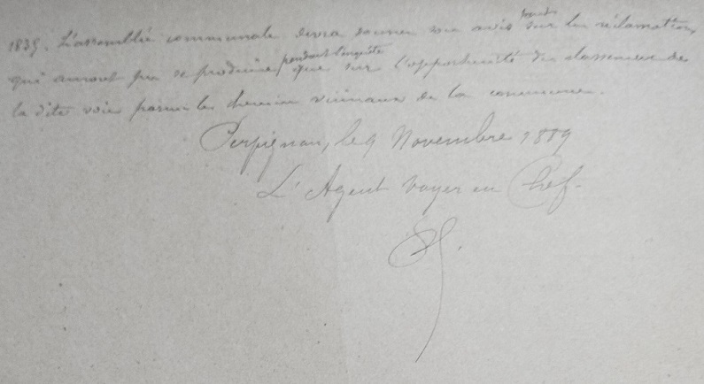
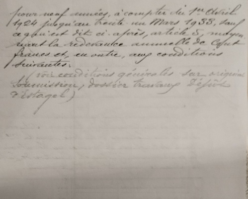

Saint Martin Lys
Voie férrée
Courriers préparatifs - Pyrénées Orientales
Pour alléger la page sur l'historique de voie ferrée, je crée cette annexe avec les courriers et plans préparant la construction de la voie ferrée Quillan Rivesaltes dans les Pyrénées orientales (collection Paul Dumanois)
cliquer sur l'image pour agrandir

1883 / 1884 - lettres de l'agent voyer en chef au Préfet des PO sur les passages à niveau entre Rivesaltes et Cases de Pène
31 juillet 1883 - Pour l'établissement de 4 passages à niveaux

9 août 1883 - Pour la rampe du passage à niveau n°3

11 octobre 1884 - Pour seulement 3 passages à niveaux
Service Hydrolique 1885 / 1887 - Police des Cours d'eau - Bassin de l'Agly - Chemin de fer de Quillan Rivesaltes (5° lot)
Chemise de liasse 1885 / 1886 (incluant les 2 courriers ci-dessous)

3 septembre 1885 - Rapport sur la construction de ponts et ponceaux
28 août 1886 - Avis sur le procès verbal de conférence


12 avril 1887 - Autorisation donnée à l'ingénieur ordinaire des Ponts et chaussées Sorel de participer à la conférence sur l'eau concernat les lot 3 et 4 de la ligne dans les PO
16 avril 1887 - Envoi des documents nécessaires pour assister à la conférence (j'ai pas les documents...)

1889/1991 - Accès aux gares Courrier entre préfecture et agent voyer en chef
29 octobre 1889 - Courrier accompagnant le dossier transmis par la préfecture à l'agent voyer pour les accès aux gares
9 novembre 1889 - Rapport de l'agent voyer en chef pour les accès aux gares -lot 4 et 5

9 novembre 1889 - Réponse de l'agent voyer en chef au courrier du 29 octobre
6 janvier 1890 - Rapport de l'agent voyer en chef sur les déviations sur le territoire d'Estagel

20 juillet 1891 - Courrier accompagnant le dossier transmis par la préfecture à l'agent voyer en chef sur l'accès à la gare de rivesaltes


24 février 1892 - décision du ministère des travaux public sur le tracé du lot 5

24 février 1892 - décision du ministère des travaux public sur le tracé du lot 4


13 septembre 1892 - décision du ministère des travaux public sur amélioration de l'alimentation en eau potable de la station de Quillan
(un peu hors sujet dans cette page...)


28 février 1895 - Plan du viaduc de la Ravière


1924 - Affermage d'un terrain appartenant à la compagnie du Midi à Estagel en dehors des clotures de la voie

Commentaires
Cliquer ici pour faire un Commentaire
Retour à l'accueil historique voie ferrée